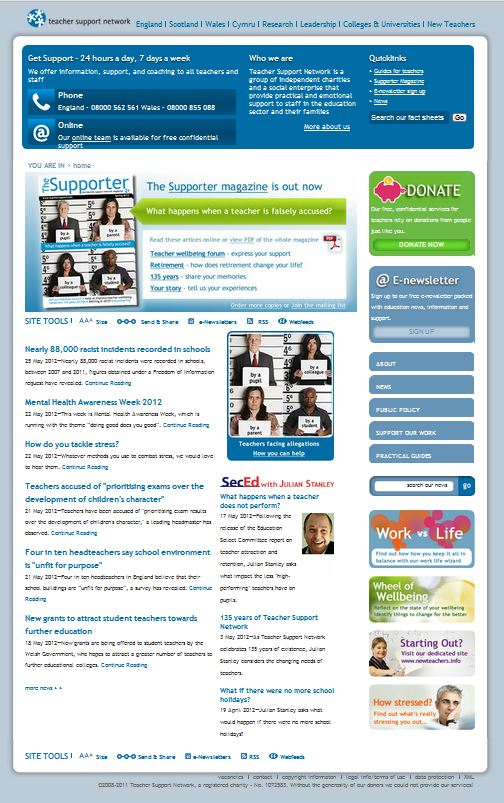

My task was to modernise the Teacher Support Network (TSN) digital presence, reduce the bounce rate and clarify the purpose of the site.
The TSN had a proprietary CMS that only worked with lists of news items - like Wordpress before they made it good. It was hard to use, ugly and prone to falling over.
Additionally the TSN simply didn't know how to think about digital. For instance they thought that analytics was just a numbers game - the more the better. Never mind if the traffic you were paying for was failing to find anything they wanted and were fleeing the site, annoyed and never to return.
I ran a classic web project; Analytics, requirements gathering, prototyping, user testing.
Responsible for all phases of the project, from initial concept right through to code, I started with by using Agile style 'story cards' to capture staff needs. By testing IA with Optimal Sort I was able to very quickly map out better user journeys.
Because I knew I was going to use Drupal for the final site I used it to make a prototype that I could test functionality out on, knowing I could skin it and deploy quickly
After that I developed a couple of candidate designs based on a 12 column grid and we were ready to launch a couple of months later: Fully responsive site on Drupal7 using a heavily customised theme.
The result makes extensive use of views and taxonomy to provide related items. Once content is tagged by editors it is automatically distributed around the site in useful ways.
12 col grid
Candidate design
Type treatment
All very good:
After launch I devised a number of content strategies to get increased engagement from the users. For instance we developed high-quality downloadable content on 'pain-points' for teachers. By using a Google Adwords grant to get people to get directly to those products we doubled site traffic in under a month. This product based approach was so much more effective than any PR or campaigning work, which tends to be bland and cautious in a conservative charity like TSN.